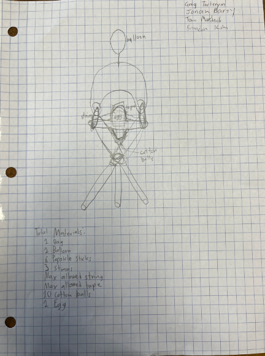
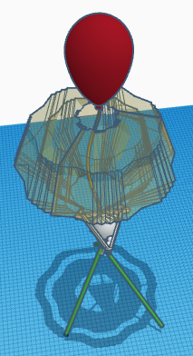

So this week, we had a new project: egg drop. We spent this week designing and will spend
next week building. My parthers are Jonah Barty, Brandon Kim, and Towa Murdock. First, we
had to do individual sketches, and mine had a popsicle-stick holder with a bag at the top,
a straw on the bottom, and cotton balls inside. The straw was to take most of the force
from impact and use it to bend the straw instead of breaking the egg. Once we teamed up
for a sketch, we combined our ideas, and the final idea has: A holder that is made of 6
popsicle sticks, some tape, and cotton balls, a parachute that has a plastic bag with a
hole in the middle (something that I just learned is optimal) with a balloon above it,
and 3 legs in a tripod formation made of straws.
The sketch:

Then, we had to do a TinkerCAD of it. It was a bit jank to put together, but eventually
we got it looking acceptable, with all the proportions being right.
